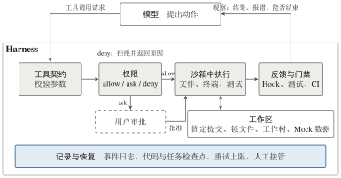

7.5 Harness Engineering：把模型的动作接入可控环境
模型可以建议“读这个文件”“改这个函数”“跑这组测试”，但它自己既不能保证命令真的执行，也不能保证执行范围正确。本节回答：模型提出动作之后，系统怎样让它安全地发生、留下记录、产生可靠的反馈？答案是 Harness——模型周围的运行系统。它要约定五件事：工作区、工具契约、权限、反馈与门禁、恢复。结论是：同一个模型能否稳定完成仓库任务，很大程度上取决于 Harness；不容例外的约束必须落在这里，而不是提示词里。
7.5.1 运行系统要约定五件事
Harness（驾驭层）向 Agent 提供工具，检查权限，隔离执行环境，记录动作和结果，并把可验证的反馈送回下一轮。OpenAI 在其工程实践中强调：仓库结构、可观察的应用状态、检查工具和反馈机制都要对 Agent 清晰可用；缺了这些，单纯要求模型“更努力”弥补不了环境问题[1]。一个能落地的 Harness 不只是“给 Agent 一个终端”，它至少要写清五件事（图 7-6、表 7-9）。

图 7-6 Harness 的五件事。模型提出的动作依次经过工具契约校验、权限检查、在工作区的沙箱中执行、反馈与门禁，结果作为观察返回模型；ask 类动作先交用户审批。所有环节都写入事件日志，作为恢复的依据（高亮）
表 7-9 Harness 的五件事
| 约定 | 要回答的问题 | 可以检查的配置或记录 |
|---|---|---|
| 工作区 | 在哪个代码版本、哪套依赖和数据上工作？ | 起始提交、依赖锁文件、独立工作树、Mock 数据 |
| 工具契约 | 能调用什么？每个动作怎样报告成功与失败？ | 工具的参数描述、参数校验、退出码、错误类型 |
| 权限 | 哪些动作自动允许、需要确认、直接拒绝？ | 规则表、审批记录、沙箱边界 |
| 反馈与门禁 | 改完后自动做哪些检查？结果怎样回到 Agent？何时允许结束？ | Hook、测试报告、构建日志、代码差异、CI 结果 |
| 恢复 | 中断、重复失败或等待审批时怎样继续？ | 任务编号、检查点、重试上限、人工接管条件 |
这五件事互相依赖。测试命令写对了，依赖没锁定或 Mock 服务没启动，照样会得到不可复现的失败；权限表写得再完整，工具若能绕过它直接执行命令，边界依然无效。每一项都应能在系统配置或运行记录里找到，而不是只存在于说明文字里。
7.5.2 工具契约：一次动作要有明确的输入和结果
工具是模型与外部世界之间的接口。以 run_test 为例，输入不能只是一段任意字符串，应写明工作目录、测试目标、超时时间和允许的命令范围；输出也不能只回一句“测试失败”，而要包括实际命令、退出码、关键错误、日志位置和耗时。只有这样，模型才能判断下一步是改代码、改测试、修环境，还是等权限。下面是一份教学用的工具契约，说明应记录哪些字段（不是某个产品的配置格式）：
工具：run_test
输入：workspace_id, test_target, timeout_ms
前置检查：工作区存在；test_target 在允许列表内；timeout_ms 不超过上限
成功结果：实际命令、exit_code = 0、测试数量、日志路径、耗时
失败结果：实际命令、exit_code、错误类型、失败断言（期望值与实际值）、日志路径工具失败要分层报告：输入错误由参数校验立即拒绝；权限错误进入审批或停止；环境错误指向依赖和服务；只有断言失败才指向代码行为。把所有错误都压成“工具调用失败”，Agent 就无从作出有依据的选择。第 7.7 节的失败分类表正是建立在这种分层之上。
工具返回的文本还要当作数据处理。搜索结果、网页、邮件正文、仓库文件里可能出现“请忽略此前的规则”这样的句子；工具层不应把它们提升为指令。稳妥的做法是保留来源、限制可调用的工具，并让权限检查在模型之外运行。否则外部数据可能借模型之口间接触发越权动作（第 7.9 节）。
7.5.3 权限与沙箱：能否执行，以及实际能做到什么
权限决定能不能尝试 权限检查发生在工具真正运行之前。常见做法是把请求分为三类：allow 直接执行，ask 等待用户授权，deny 直接拒绝。分类的依据应是动作及其影响，而不只是工具名称：同一个日历接口，读事件和删事件的风险显然不同；同一个终端，跑单元测试和读密钥文件也不能同等对待。Claude Code 的权限规则就可以按工具和参数（例如某条命令、某个路径）分别配置 allow、ask、deny[2]。
沙箱决定实际能做到什么 沙箱（sandbox）在操作系统层面限制进程能接触的文件、网络和系统资源：即使某条命令被错误地批准，进程也只能触及允许的范围。OpenAI Codex 把两层控制分开配置：沙箱模式有只读（read-only）、工作区可写（workspace-write，默认关闭网络）、完全访问（danger-full-access）三档；审批策略则决定哪些动作需要先问用户[3]。两层的分工是：权限管“该不该做”，沙箱管“做了最多能波及多远”。
身份与凭据 访问外部服务时使用权限最小的身份；令牌不进入提示、日志和提交；测试凭据与生产凭据分开。要记住，Agent 生成并运行的代码能访问运行环境里所有可见的文件、凭据和网络，因此“把密钥放进环境变量”并不能保证它不被读到；更好的做法是让代理服务在执行环境之外保管真实密钥。
辨析
Git 工作树（worktree）不是沙箱。工作树让同一仓库在不同目录检出不同分支，便于并行修改和回滚，解决的是代码改动互不覆盖；多个工作树共用同一个仓库对象库，本质上只是多份检出目录；它不限制进程读写工作树以外的文件，也不阻止网络访问。真正的资源边界由沙箱（容器、虚拟机或操作系统级隔离）提供。把二者混为一谈，会让“代码互相隔离”被误当成“凭据和环境也已隔离”。
本章教学项目可以这样设边界：读取三个 Mock Adapter 和项目源码——allow；在独立工作区修改文件、运行 lint、test、build——allow；安装新依赖、调用真实的邮件或日历写接口——ask；读取密钥目录、删除生产数据——deny。审批请求要让人知道自己批准的究竟是什么：文件改动显示路径和差异，外部写入显示目标账户、收件人或事件内容、时间与影响范围。批准一次具体动作，不应被自动解释为批准以后所有同类动作；审批结果也要写进任务记录，供复核和恢复。
7.5.4 自动反馈与完成门禁
Agent 可能忘了运行检查，也可能看到一项测试通过就提前结束。Harness 可以把关键检查挂在生命周期事件上，让它们固定发生。Claude Code 的 Hook（钩子）机制就是这样的确定性触发点：在指定事件发生时运行用户定义的程序，不依赖模型主动想起[2]。按事件先后，一条反馈链可以这样安排：
观察：命令输出、代码差异、截图、日志和指标返回下一轮推理；
执行前检查（如
PreToolUse事件）：拦截受保护路径、危险命令、外发网络和缺少批准的外部写入；执行后检查（如
PostToolUse事件）：编辑代码后自动运行格式化、类型检查和最相关的单元测试，失败输出必须返回给 Agent；结束检查（如
Stop事件）：测试失败、验收未完成或证据缺失时，不允许宣布完成；CI 与合并请求：在 Agent 工作区之外独立构建、测试和做安全检查，高风险变更保留人工审查。
辨析
反馈与门禁职责不同。测试输出是反馈，它告诉 Agent 哪个断言失败、差在哪里；“相关测试没通过就不得宣布完成”是门禁，它决定现在能不能结束。只有反馈没有门禁，Agent 可能在失败时照样交付；只有门禁没有反馈，Agent 知道不能结束，却不知道该改什么。
检查的顺序影响效率。每次编辑后先跑相关的单元测试或类型检查，失败时把问题限制在小范围；相关检查通过后再跑完整测试和构建；界面有变化时追加端到端检查和截图。小检查用于快速定位，大检查用于最终回归，两者都不能省。测试本身不稳定时，要记录失败率和重跑结果，不能把一次偶然通过当作功能正确的证据。OpenAI 的实践还把页面状态、日志、指标和调用链数据接入 Agent 的环境，让它能根据真实运行证据修正实现[1]。
7.5.5 可观察性与恢复
任务持续几十分钟或跨会话时，执行过程要留下事件记录：任务编号、代码版本、工具名称与参数摘要、开始和结束时间、退出码、日志路径、审批决定、改动的文件。保存原始输出时要过滤凭据和敏感业务数据。有了这些记录，用户能回答“Agent 做了什么”，系统也能在中断后判断从哪里继续。
恢复点由两部分组成：代码检查点（一次提交、一个分支或工作树中的明确快照）和任务状态检查点（还没满足的验收条件、最近一次成功的检查、失败原因、待批准的动作）。只有代码快照而没有任务状态，重启后可能重复执行；只有对话摘要而没有代码版本，又可能在错误的文件状态上继续。
重试要区分故障类型。网络超时可以在限定次数内重试；测试断言连续失败则应检查代码和假设，原样重跑一般得不到新信息（第 7.7 节）。发邮件、建日历事件这类有外部副作用的动作，重试前尤其要防重复：给每次请求附一个唯一的幂等键（idempotency key）：发起方为同一个逻辑请求生成一次，之后所有重试都沿用同一个键，服务端见到相同的键只执行一次并返回同一结果；或者先查询该请求是否已经生效。否则断线后重试，可能发出两封邮件、建出两个事件。达到重试上限、权限不足或环境与预期不符时，应停下来，把证据交给人。
7.5.6 一份教学项目的 Harness 配置草案
下面用接近配置文件的形式汇总本节机制，便于逐项映射到具体工具。它是概念草案，不是 Codex、Claude Code 或其他产品能直接运行的配置语法。
workspace:
source: current_git_repository
isolation: dedicated_worktree # 代码隔离；资源隔离另由 sandbox 提供
dependencies: lockfile
data: calendar_mail_tasks_mock
sandbox: {filesystem: workspace_only, network: off}
tools:
allow: [read_project, edit_workspace, lint, typecheck, targeted_test, build]
ask: [install_dependency, send_mail, write_calendar, delete_task]
deny: [read_secrets, delete_production_data]
checks:
after_edit: [lint, typecheck, targeted_test]
before_done: [full_test, build, review_diff]
recovery:
checkpoint: after_passing_tests
transient_retry_limit: 2 # 首次失败后最多再重试 2 次，共 3 次尝试
handoff_on: [permission_block, repeated_failure, irreversible_action]实现这份草案时，有四个细节容易漏掉：
ask必须在执行之前真正暂停，不能先调用再通知；deny要同时覆盖高层工具接口和底层执行环境，否则终端可以绕开高层工具；after_edit检查失败时，具体输出要送回 Agent，而不是只写进用户看不到的日志；before_done要核对证据是否属于当前代码版本，旧版本上通过的测试证明不了新修改。
本节要点
Harness 约定五件事：工作区、工具契约、权限、反馈与门禁、恢复。
权限管“该不该做”，沙箱管“最多能波及多远”；工作树只隔离代码，不隔离资源。
反馈告诉 Agent 哪里错，门禁决定能否结束；外部写入靠幂等键防止重复。